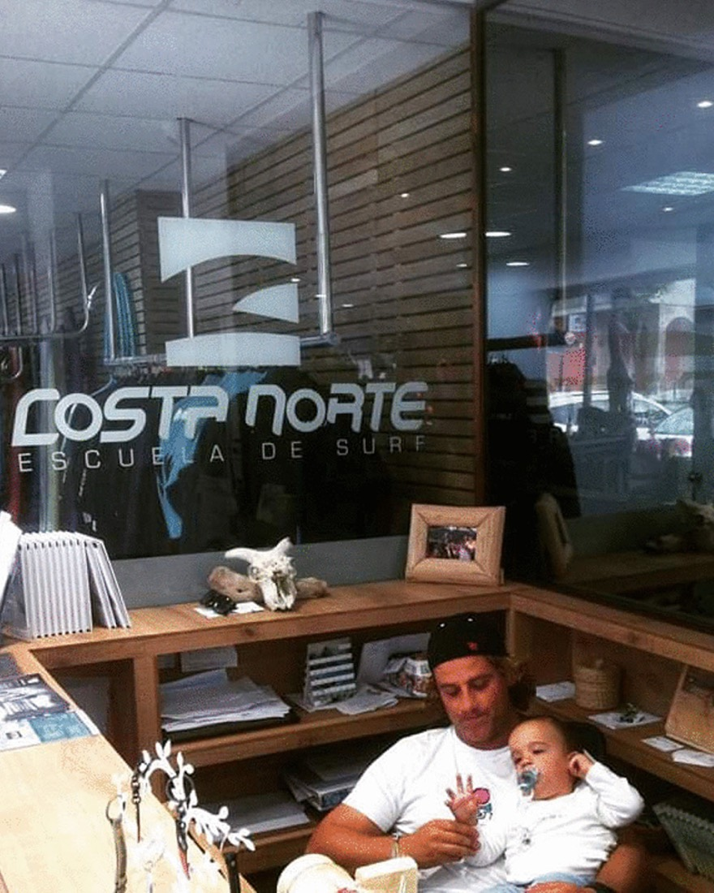
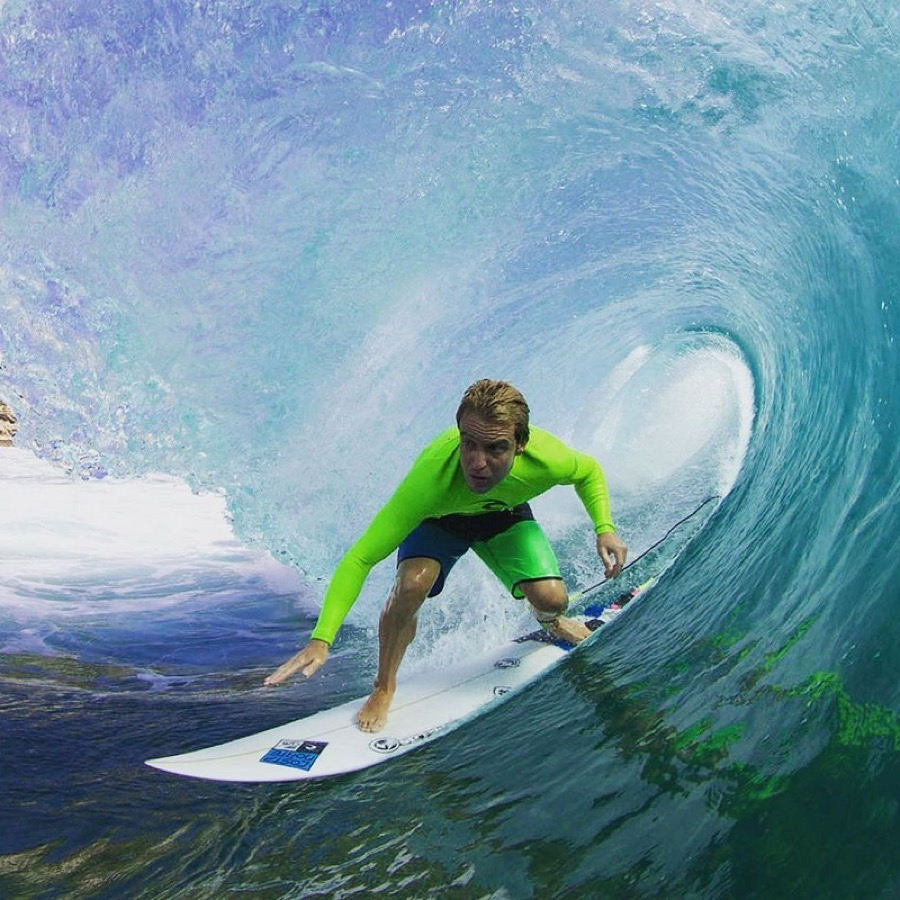

المبتدئون
موجتك الأولى، مهما كان عمرك. شرح نظري على الرمل ثم إلى الماء من اليوم الأول.
المدرسة الرسمية في سان فيسنتي، مع Rip Curl منذ 2006.
مقاطع الفيديو الخاصة بنا، مصوّرة في سان فيسنتي دي لا باركيرا.
Surf and friends in San Vicente de la Barquera, 2020
دروس ركوب الأمواج في سان فيسنتي
Rip Curl GromSearch 2021
ركوب الأمواج والتجديف وقوفًا في المدرسة
حصص مدتها ساعتان، صباحًا أو مساءً، في مجموعات صغيرة. اللوح وبدلة Rip Curl والتأمين مشمولة.
موجتك الأولى، مهما كان عمرك. شرح نظري على الرمل ثم إلى الماء من اليوم الأول.

لمن يلتقط الأمواج بالفعل ويريد الانتقال إلى المرحلة التالية مع مدرّب بجانبه.

تدريب للبطولات، مع تحليل بالفيديو لكل حصة.

في المصب، على أمواج ميرون، سباقات SUP أو درس خاص. من عمر 7 سنوات.
مدربون حاصلون على شهادات ISA وTD1 وTD2 وINEF. ودروس خاصة وسيرف سكيت أيضًا.
ماء كل يوم، شقة على الشاطئ وأناس رائعون. اختر معسكرك.

الأكثر طلبًا. ركوب الأمواج أو التجديف وقوفًا كل يوم.

النسخة المكثفة، ساعات أكثر في الماء.

مرة في السنة، مع راكبي أمواج من Rip Curl.

معسكر للفتيات فقط.
معسكرات للبالغين وباقات نهاية الأسبوع والمخيم الصيفي للشباب مع Costa Verde Surf Experience.
معتمدة من اتحادات ركوب الأمواج الكانتابري والإسباني والأوروبي.

يبدأ إيفان آخا «نوريس» بتعليم ركوب الأمواج في سان فيسنتي دي لا باركيرا.

تصبح Rip Curl الراعي الرئيسي للمدرسة.

نشتري الشقة الأولى وننظم أول معسكر لركوب الأمواج.

معسكر تدريبي للمنتخب الإسباني لركوب الأمواج في كوستا نورتي.

افتتاح Costa Norte SUP School في المصب وعلى الأمواج.

أصبح لألواح كوستا نورتي اسمها الخاص.

ننتقل إلى 350 م²، و600 مع التراس.

نوسّع السكن المطل على الشاطئ.

مدرسة رسمية، معسكرات ركوب الأمواج، عشرون شقة وRip Curl منذ اليوم الأول.
عشرون شقة بجوار المدرسة والشاطئ، جُدّدت في 2019. احجز مباشرة على موقعنا بلا عمولات.


تسعة أنواع، من 2 إلى 5 أشخاص
من يتدربون وينافسون ويسافرون مع كوستا نورتي.
سوانسيس وسان فيسنتي. Regular. أي نقطة كسر طويلة يمينية.

يانيس. Goofy. أنابيب ومنعطفات حادة على الحافة.

حول العالم. Regular. الموجة اليمينية في لا سانتا.

سوانسيس. Goofy. لوس لوكوس.
سفراء Rip Curl في كانتابريا، وNorrys، علامتنا الخاصة للألواح.

متجر سفير Rip Curl في كانتابريا. راعي المدرسة منذ 2006: بدلات الغوص والملابس والإكسسوارات لكل موسم.
العلامات التجارية في متجرنا


Av. Francisco Giner de los Ríos, 46
سان فيسنتي دي لا باركيرا، كانتابريا (إسبانيا)